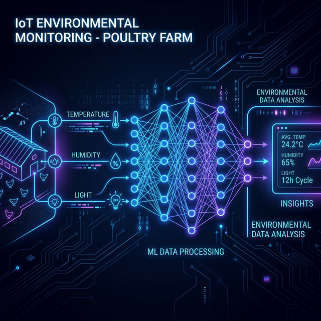
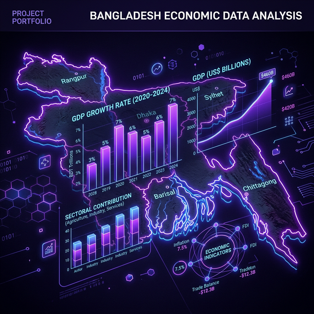

"Transforming data into meaningful insights that create real-world impact."
I'm Ayesha Siddika, a Trainee Data Analyst at Save the Children International, where I work with analytics tools and data systems to support humanitarian programs.
Enthusiastic Computer Science and Engineering graduate with a strong foundation in programming, data structures, algorithms, OOP, MySQL, machine learning, and deep learning. Passionate about leveraging analytical and problem-solving skills in areas such as data analysis, AI-driven solutions, and cybersecurity.
With a B.Sc. in Computer Science & Engineering from Daffodil International University (GPA: 3.8/4.0), I'm passionate about using data to drive evidence-based policy and create measurable social impact. Eager to contribute to innovative industry projects or academic research that advance technology and strengthen digital security.
Daffodil International University
GPA: 3.8 / 4.0
HM Institution
GPA: 4.83 / 5.0
Khadiza Abubakar High School
GPA: 5.0 / 5.0
A journey through analytics, government data, education, and emergency response.
Supporting digital transformation under the Digital Equity Fellowship. Developing data-driven applications and automated workflows using PowerApps, Power Automate, and SharePoint. Contributed to international projects: Yemen FRM, Lebanon FRM, and Medical QMS. Analyzing data using Power BI to produce interactive dashboards for global stakeholders.
Hands-on experience in survey design and data collection for the Quarterly GDP (QGDP) and District-based GDP (DGDP) project. Learned government project budgeting and data confidentiality protocols.
Collected impact data during the Tongi Fire emergency project using Kobo Toolbox. Facilitated rapid gathering of reliable data from affected residents to support response planning.
Tools and technologies I use to turn raw data into actionable intelligence.
Research, analytics, and data science projects creating real-world impact.

Developed a data-driven model to correlate environmental factors (temperature, humidity) with poultry egg yield. Implemented ML algorithms to optimize farm conditions, demonstrating practical IoT applications in agriculture.

Developed an NLP-based deep learning model to detect hate speech in Banglish comments. Utilized models like LSTM, GRU, and Bi-LSTM with a focus on ethical concerns and online privacy.
Recognized for well-researched and clearly articulated content, competing against many participants. Strengthened ability to present complex technical ideas effectively to diverse audiences.
Volunteering and community engagement that extends impact beyond the data.